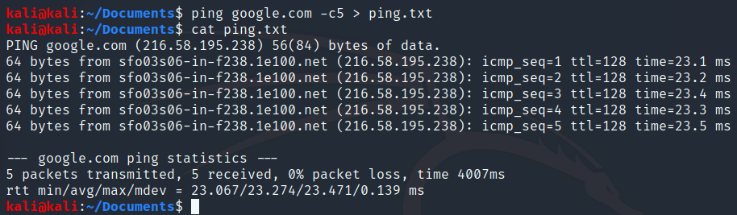
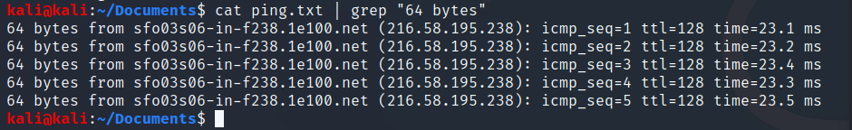
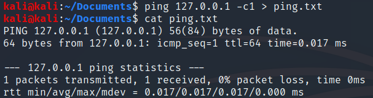
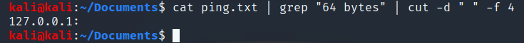
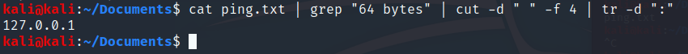
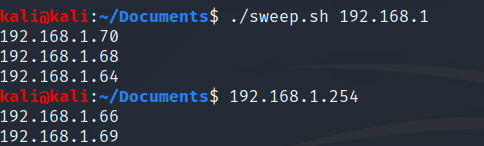
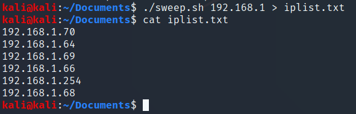
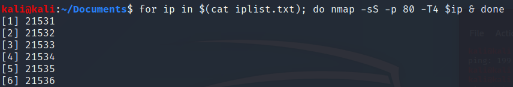

Scripting w Bash
Todo el output de un comando de terminal puede ser guardado en un archivo, lo cual facilita la manipulación y análisis de este output.
Por ejemplo podríamos usar el comando ping, guardar el output de este comando en un archivo y manipular este archivo.

AL hacer ping con la bandera
-c5hacemos 5 peticiones icmp, con el operador>escribimos en el archivoping.txtla salida del comando ping. Con el comandocat ping.txtconcatenamos el contenido deping.txten la terminal.
Imaginemos que queremos saber cuantas peticiones icmp se hicieron,
podemos utilizar el comando grep y hacer pipe, las pipes nos
permiten tomar el output de un comando y usarlo como imput de otro, se
usa con el operador |.
Para la situación que escribimos más arriba, hariamos uso de el comando
cat ping.txt | grep "64 bytes"

Aqui estamos buscando la cadena “64 bytes” en el archivo
ping.txty nos regresa las lineas que tienen ese string.
Ahora imaginemos que queremos buscar cosas más específicas, existe el
comando cut que nos permite buscar cosas con reglas más precisas.

Imaginemos que queremos extraer el campo de IP de una petición icmp
específica, que en este caso seria 127.0.0.1 pero bien podría ser
cualquier otra dirección a la cual se hizo ping.
 > Hacemos otro pipe dándole el output de
grep a cut en el cual le damos como argumento -d " " d viene de
delimiter, le decimos que tome los espacios como delimitadores, y con el
argumento -f 4, le decimos que nos de el cuarto elemento tomando en
cuenta lo anterior.
Pero tenemos un problema, hay un : al final de la IP que nos impide
usar esta IP.
Podemos quitarlo con la ayuda de el comando tr haciendo pipe otra
vez. 
Ahora usando estos conocimientos podemos crear un script.
#! /bin/bash for ip in `seq 1 254` ; do ping -c 1 $1.$ip | grep "64 bytes" | cut -d " " -f 4 | tr -d ":" & done
Guardamos con la extención .sh
La primera linea corresponde a algo llamado bang que indica que programa va a ejecutar el script, en este caso es un script bash, pero puede ser python o otro.
La segunda linea corresponde a un ciclo for, declarando ip y diciendo que itere de 1 a 254.
La tercera linea nos dice que hagamos ping
-c 1es que hagamos solo un ping,$1indica el imput del usuario, e$ipla variable ip con la que vamos a iterar en el ciclo for
A esto se le llama IP sweeping, este script va a recibir como imput los primeros 3 octetos de una dirección IP y va a a hacer ping a todas las direcciones posibles dentro del cuarto octeto para ver cúales tienen conectividad y cuales no.
Ahora para poder ejecutarlo, necesitamos darle permisos de ejecución al
script, esto se hace con el comando chmod +x archivo y lo ejecutamos
con ./archivo
El script dara como output algo como esto.

Pero sería más útil si guardamos estas IPs en un archivo. con el comando
./sweep.sh > iplist.txt

También podemos mejorar un poco nuestro script de esta manera:
#! /bin/bash if [ "$1" == "" ] then echo "Olvidaste poner una dirección IP" echo "EJ: ./script 192.168.1 " else for ip in `seq 1 254` ; do ping -c 1 $1.$ip | grep "64 bytes" | cut -d " " -f 4 | tr -d ":" & done fi
Una de las ventajas de linux es que la terminal es un interprete de bash, asi que podemos hacer cosas como estas:
for ip in $(cat iplist.txt); do nmap -sS -p 80 -T4 $ip & done

Aqui acabamos de ejecutar un mini script de una linea en el que le pasamos las IPs a un programa para que ejecute un análisis de las 8 IPs.